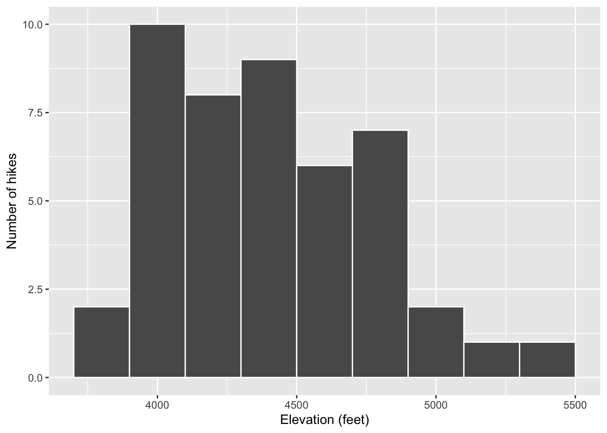
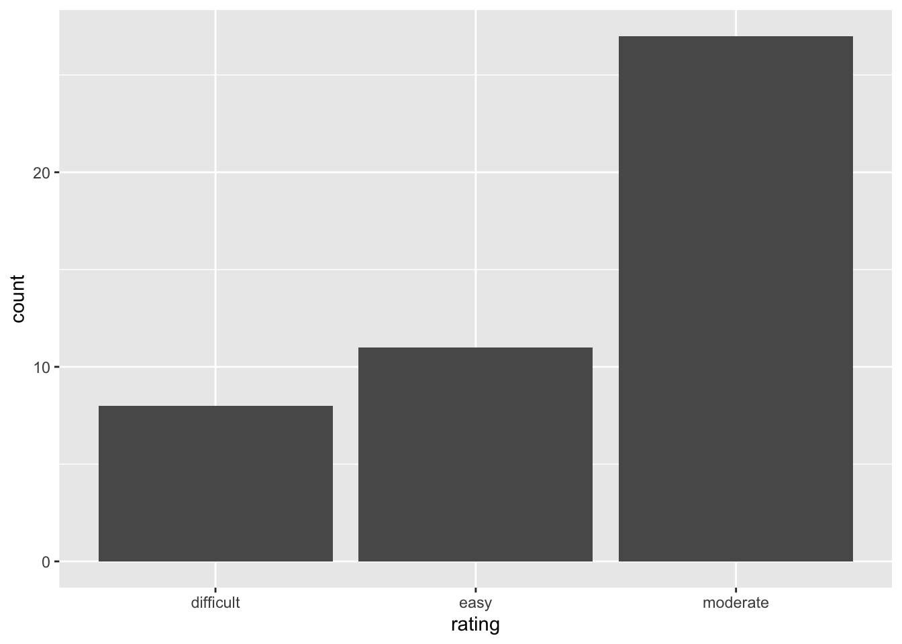
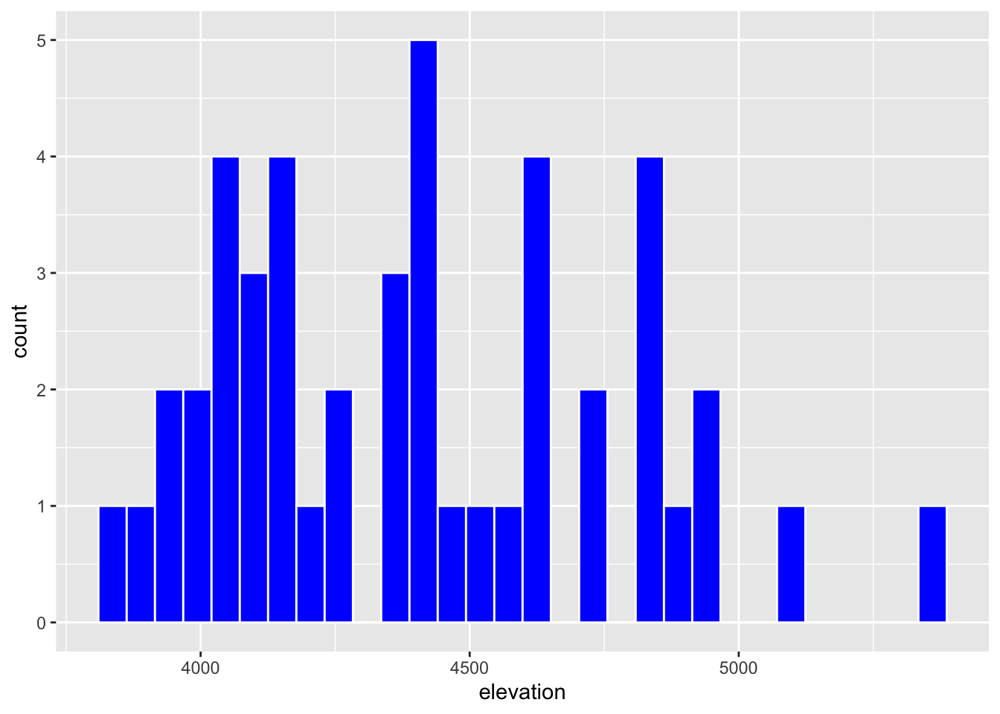
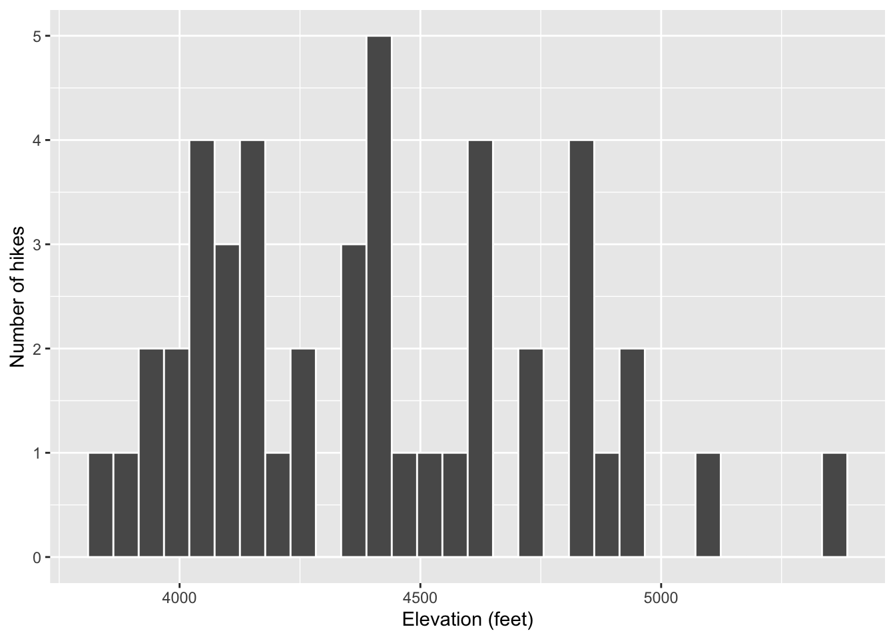

── Attaching core tidyverse packages ──────────────────────── tidyverse 2.0.0 ──
✔ dplyr 1.1.4 ✔ readr 2.1.5
✔ forcats 1.0.0 ✔ stringr 1.5.1
✔ ggplot2 3.5.1 ✔ tibble 3.2.1
✔ lubridate 1.9.4 ✔ tidyr 1.3.1
✔ purrr 1.0.2
── Conflicts ────────────────────────────────────────── tidyverse_conflicts() ──
✖ dplyr::filter() masks stats::filter()
✖ dplyr::lag() masks stats::lag()
ℹ Use the conflicted package (<http://conflicted.r-lib.org/>) to force all conflicts to become errors8 Univariate Viz
Use this file for practice with the univariate viz in-class activity. Refer to the class website for details.
8.1 Exercises
Exercise 1: Research Questions
Let’s dig into the hikes data, starting with the elevation and difficulty ratings of the hikes:
peak elevation difficulty ascent length time rating
1 Mt. Marcy 5344 5 3166 14.8 10.0 moderate
2 Algonquin Peak 5114 5 2936 9.6 9.0 moderate
3 Mt. Haystack 4960 7 3570 17.8 12.0 difficult
4 Mt. Skylight 4926 7 4265 17.9 15.0 difficult
5 Whiteface Mtn. 4867 4 2535 10.4 8.5 easy
6 Dix Mtn. 4857 5 2800 13.2 10.0 moderate- What features would we like a visualization of the categorical difficulty
ratingvariable to capture?
- We would want to capture the difficulty rating through faceting, separating it into groups, to compare and contrast them
- What about a visualization of the quantitative
elevationvariable?
- We would want to capture the difficulty rating to be captured in either the y-axis or x-axis of a frame
Exercise 2: Load tidyverse
We’ll address the above questions using ggplot tools. Try running the following chunk and simply take note of the error message – this is one you’ll get a lot!

In order to use ggplot tools, we have to first load the tidyverse package in which they live. We’ve installed the package but we need to tell R when we want to use it. Run the chunk below to load the library. You’ll need to do this within any .qmd file that uses ggplot().
Exercise 3: Bar Chart of Ratings - Part 1
Consider some specific research questions about the difficulty rating of the hikes:
How many hikes fall into each category?
Are the hikes evenly distributed among these categories, or are some more common than others?
All of these questions can be answered with: (1) a bar chart; of (2) the categorical data recorded in the rating column. First, set up the plotting frame:

Think about:
- What did this do? What do you observe?
- What, in general, is the first argument of the
ggplot()function? - What is the purpose of writing
x = rating? - What do you think
aesstands for?!?
Exercise 4: Bar Chart of Ratings - Part 2
Now let’s add a geometric layer to the frame / canvas, and start customizing the plot’s theme. To this end, try each chunk below, one by one. In each chunk, make a comment about how both the code and the corresponding plot both changed.
NOTE:
- Pay attention to the general code properties and structure, not memorization.
- Not all of these are “good” plots. We’re just exploring
ggplot.
# This added a second line, geom_bar(), which added the geometric element of a bar representing quantity of a variable to the ggplot(hikes)
ggplot(hikes, aes(x = rating)) +
geom_bar()
# This added a third line of code, labs(x = "Rating", y = "Number of hikes"), which defined the x-axis and y-axis for the ggplot(hikes). "ratings" was already the x-axis, but it was capitalized, and the y-axis changed from "count" to "Number of hikes"
ggplot(hikes, aes(x = rating)) +
geom_bar() +
labs(x = "Rating", y = "Number of hikes")# This added a function to the geom_bar(), adding fill = "blue" to it, which made the bars blue
ggplot(hikes, aes(x = rating)) +
geom_bar(fill = "blue") +
labs(x = "Rating", y = "Number of hikes")
# This changed the geom_bar line of code, adding in color = orange, making the whole bar orange including its edges, but then the fill function filled in the inner part of the bars to be blue, making the edges of the bar orange and the filling blue
ggplot(hikes, aes(x = rating)) +
geom_bar(color = "orange", fill = "blue") +
labs(x = "Rating", y = "Number of hikes")

Exercise 5: Bar Chart Follow-up
Part a
Reflect on the ggplot() code.
- What’s the purpose of the
+? When do we use it? - The point of the + is to add on changes to the hike data within the ggplot
- We added the bars using
geom_bar()? Why “geom”? - geom_bar() is called geom because it is short for geometric element (a bar in this case)
- What does
labs()stand for? - labs() is short for labels
- What’s the difference between
colorandfill? - Color changes the color of the whole bar, whereas fill fill in the inner part of the bar
Part b
In general, bar charts allow us to examine the following properties of a categorical variable:
- observed categories: What categories did we observe?
- We saw the categories of easy, moderate, and difficult rating of each observation
- variability between categories: Are observations evenly spread out among the categories, or are some categories more common than others?
- Observations are not evenly spread out among difficulty ratings, with moderate being the most common, and difficult being the least common
We must then translate this information into the context of our analysis, here hikes in the Adirondacks. Summarize below what you learned from the bar chart, in context. - From the bar chart we learned that most people are more likely to rate their hikes on trails as moderate than difficult or easy. They are least likely to rate their hike as difficult, but only slightly less than they are to rate it as easy.
Part c
Is there anything you don’t like about this barplot? For example: check out the x-axis again. - This bar chart should graduate its classes of difficulty from easy to difficult, to make it intuitively easier to read, but it instead places the difficult bar furthest left and the moderate bar the furthest right
Exercise 6: Sad Bar Chart
Let’s now consider some research questions related to the quantitative elevation variable:
- Among the hikes, what’s the range of elevation and how are the hikes distributed within this range (e.g. evenly, in clumps, “normally”)?
- Hikes are relatively evenly distributed, with few observations that have the same elevation. The range is from roughly 3,500 ft to 6,00 ft
- What’s a typical elevation?
- Because elevation is roughly evenly spread, it is difficult to find an average or median to resemble the elevation of most of the observations effectively. A median or average might fall around 4,400 ft.
- Are there any outliers, i.e. hikes that have unusually high or low elevations?
- two observaitons, above 5,000 ft, and 4 observations below 4,000 ft stand out as outliers
Here:
- Construct a bar chart of the quantitative
elevationvariable. - Explain why this might not be an effective visualization for this and other quantitative variables. (What questions does / doesn’t it help answer?)
- This bar chart allows us to see the distribution of elevation, but it does not effectively reveal a median or average for the human eye because the results are seemingly quite evenly distributed but not (with a few breakaway chunks). The x-axis, the count of observations per an elevation, isn’t very useful because there are nearly no observations with the same elevation and it mostly just clutters the image, whose main value is showing the distribution of elevations.
Exercise 7: A Histogram of Elevation
Quantitative variables require different viz than categorical variables. Especially when there are many possible outcomes of the quantitative variable. It’s typically insufficient to simply count up the number of times we’ve observed a particular outcome as the bar graph did above. It gives us a sense of ranges and typical outcomes, but not a good sense of how the observations are distributed across this range. We’ll explore two methods for graphing quantitative variables: histograms and density plots.
Histograms are constructed by (1) dividing up the observed range of the variable into ‘bins’ of equal width; and (2) counting up the number of cases that fall into each bin. Check out the example below:

Part a
Let’s dig into some details.
- How many hikes have an elevation between 4500 and 4700 feet?
- 6
- How many total hikes have an elevation of at least 5100 feet?
- a little less than 4
Part b
Now the bigger picture. In general, histograms allow us to examine the following properties of a quantitative variable:
- typical outcome: Where’s the center of the data points? What’s typical?
- variability & range: How spread out are the outcomes? What are the max and min outcomes?
- shape: How are values distributed along the observed range? Is the distribution symmetric, right-skewed, left-skewed, bi-modal, or uniform (flat)?
- outliers: Are there any outliers, i.e. outcomes that are unusually large/small?
We must then translate this information into the context of our analysis, here hikes in the Adirondacks. Addressing each of the features in the above list, summarize below what you learned from the histogram, in context.
- Typical outcome: this historogram illustrated how hikes in the Adirondacks tend to be focused around 4000-5000 feet in elevation
- Variability and range: this historogram showed that the elevation of the hikes tend to concentrate towards the lower end of the range, but also illustrates that there are outliers on the edge -shape: this historogram shows that the shape is of the distribution is a hump that quickly rises on the edge of the range, and gradually drops off as it goes right
- outliers: this historogram shows that there were a few outliers at the lower elevation, and more at the higher elevations
Exercise 8: Building Histograms - Part 1
2-MINUTE CHALLENGE: Thinking of the bar chart code, try to intuit what line you can tack on to the below frame of elevation to add a histogram layer. Don’t forget a +. If it doesn’t come to you within 2 minutes, no problem – all will be revealed in the next exercise.
Exercise 9: Building Histograms - Part 2
Let’s build some histograms. Try each chunk below, one by one. In each chunk, make a comment about how both the code and the corresponding plot both changed.
# instead of using geom_bar, geom_historogram was used which automatically created bins
ggplot(hikes, aes(x = elevation)) +
geom_histogram()`stat_bin()` using `bins = 30`. Pick better value with `binwidth`.
# ( color = "white") was added to geom_historogram which added a white outline to each bar in the historogram, separating the bars and making it easier to read
ggplot(hikes, aes(x = elevation)) +
geom_histogram(color = "white") `stat_bin()` using `bins = 30`. Pick better value with `binwidth`.
# fill = "blue" was added to geom_historogram(color = "white") which made the fill of the bars blue
ggplot(hikes, aes(x = elevation)) +
geom_histogram(color = "white", fill = "blue") `stat_bin()` using `bins = 30`. Pick better value with `binwidth`.
# labs() was added and a value was added to the x-axis and y-axis was added between the parentheses which changed their labels on the historogram
ggplot(hikes, aes(x = elevation)) +
geom_histogram(color = "white") +
labs(x = "Elevation (feet)", y = "Number of hikes")`stat_bin()` using `bins = 30`. Pick better value with `binwidth`.
# The width of the bins was changed to be 1000, and since the range was 2000, two bins were created that are displayed as bars
ggplot(hikes, aes(x = elevation)) +
geom_histogram(color = "white", binwidth = 1000) +
labs(x = "Elevation (feet)", y = "Number of hikes")
# The binwidth was changed to 5, and because the range was 2000, many bars could be created across such a large range with such small bins
ggplot(hikes, aes(x = elevation)) +
geom_histogram(color = "white", binwidth = 5) +
labs(x = "Elevation (feet)", y = "Number of hikes")
# The binwidth was changed to 200, and across a range of roughly 2000 there were a few observations that fell into each bin making a relatively normal looking historogram
ggplot(hikes, aes(x = elevation)) +
geom_histogram(color = "white", binwidth = 200) +
labs(x = "Elevation (feet)", y = "Number of hikes")
Exercise 10: Histogram Follow-up
- What function added the histogram layer / geometry?
- geom_historogram
- What’s the difference between
colorandfill? - color makes the outline of the historogram bars the same as the input color, fill fills the whole bar excluding the outline
- Why does adding
color = "white"improve the visualization? - it makes it easier to differentiate the bars visually, improving readability
- What did
binwidthdo? - it set the range of the bins, which would then determine how many bins were in the historogram based on the range of the data/binwidth
- Why does the histogram become ineffective if the
binwidthis too big (e.g. 1000 feet)? - it fits too many observations into the same bin, which may have drastically different values
- Why does the histogram become ineffective if the
binwidthis too small (e.g. 5 feet)? - it does not fit enough results into each bin, making it harder to aggregate and therefore read
Exercise 11: Density Plots
Density plots are essentially smooth versions of the histogram. Instead of sorting observations into discrete bins, the “density” of observations is calculated across the entire range of outcomes. The greater the number of observations, the greater the density! The density is then scaled so that the area under the density curve always equals 1 and the area under any fraction of the curve represents the fraction of cases that lie in that range.
Check out a density plot of elevation. Notice that the y-axis (density) has no contextual interpretation – it’s a relative measure. The higher the density, the more common are elevations in that range.

Questions
-
INTUITION CHECK: Before tweaking the code and thinking back to
geom_bar()andgeom_histogram(), how do you anticipate the following code will change the plot?geom_density(color = "blue")geom_density(fill = "orange")
TRY IT! Test out those lines in the chunk below. Was your intuition correct?

Examine the density plot. How does it compare to the histogram? What does it tell you about the typical elevation, variability / range in elevations, and shape of the distribution of elevations within this range?
The density plot tells you the range of the x-axis, but nothing about the range of the y-axis. It tells you the shape of the distribution of elevations effectively, giving it an organic and easy to read shape. Overall, from this density plot we can see that there are very few hikes at the lower end of the range, a high number at the low-to-mid level, and a decline in the number of hikes at the top of the range.
Exercise 12: Density Plots vs Histograms
The histogram and density plot both allow us to visualize the behavior of a quantitative variable: typical outcome, variability / range, shape, and outliers. What are the pros/cons of each? What do you like/not like about each?
- The historogram provides more data about the range of the y-axis, but it does not have an organic shape that allows one to see the distribution of observations along the y-axis (unless it has tiny bins, which is a bad visualization) and it cant fit observations with wildly different values into the same bin. The density plot does not provide any information about the range of the y-axis. It makes up for this by providing information about the distribution of observations on the y-axis
Exercise 13: Code = communication
We obviously won’t be done until we talk about communication. All code above has a similar general structure (where the details can change):
- Though not necessary to the code working, it’s common, good practice to indent or tab the lines of code after the first line (counterexample below). Why?
# YUCK
ggplot(hikes, aes(x = elevation)) +
geom_histogram(color = "white", binwidth = 200) +
labs(x = "Elevation (feet)", y = "Number of hikes")
- Though not necessary to the code working, it’s common, good practice to put a line break after each
+(counterexample below). Why?

Exercise 14: Practice
Part a
Practice your viz skills to learn about some of the variables in one of the following datasets from the previous class:
Part b
Check out the RStudio Data Visualization cheat sheet to learn more features of ggplot.
Check → Commit → Push
When done, don’t forgot to click Render Book and check the resulting HTML files. If happy, jump to GitHub Desktop and commit the changes with the message Finish activity 3 and push to GitHub. Wait few seconds, then visit your portfolio website and make sure the changes are there.
8.2 Solutions
Click for Solutions
Exercise 1: Research Questions
- For example: how many hikes are there in each category? are any categories more common than others?
- For example: What’s a typical elevation? What’s the range in elevations?
Exercise 3: Bar Chart of Ratings - Part 1

- just a blank canvas
- name of the dataset
- indicate which variable to plot on x-axis
-
aesthetics
Exercise 4: Bar Chart of Ratings - Part 2

# Add meaningful axis labels
ggplot(hikes, aes(x = rating)) +
geom_bar() +
labs(x = "Rating", y = "Number of hikes")
# FILL the bars with blue
ggplot(hikes, aes(x = rating)) +
geom_bar(fill = "blue") +
labs(x = "Rating", y = "Number of hikes")
# COLOR the outline of the bars in orange
ggplot(hikes, aes(x = rating)) +
geom_bar(color = "orange", fill = "blue") +
labs(x = "Rating", y = "Number of hikes")
# Change the theme to a white background
ggplot(hikes, aes(x = rating)) +
geom_bar(color = "orange", fill = "blue") +
labs(x = "Rating", y = "Number of hikes") +
theme_minimal()
Exercise 5: Bar Chart Follow-up
Part a
- To indicate we’re still adding layers to / modifying our plot.
- Bars are the
geometric elements we’re adding in this layer. - labels
-
fillfills in the bars.coloroutlines the bars.
Part b
Most hikes are moderate, the fewest number are difficult.
Part c
I don’t like that the categories are alphabetical, not in order of difficulty level.
Exercise 6: Sad Bar Chart
There are too many different outcomes of elevation.

Exercise 7: A Histogram of Elevation
Part a
- 6
- 1 + 1 = 2
Part b
Elevations range from roughly 3700 to 5500 feet. Elevations vary from hike to hike relatively normally (with a bell shape) around a typical elevation of roughly 4500 feet.
Exercise 9: Building Histograms - Part 2
`stat_bin()` using `bins = 30`. Pick better value with `binwidth`.
`stat_bin()` using `bins = 30`. Pick better value with `binwidth`.
# Fill the bars in blue
ggplot(hikes, aes(x = elevation)) +
geom_histogram(color = "white", fill = "blue") `stat_bin()` using `bins = 30`. Pick better value with `binwidth`.
# Add axis labels
ggplot(hikes, aes(x = elevation)) +
geom_histogram(color = "white") +
labs(x = "Elevation (feet)", y = "Number of hikes")`stat_bin()` using `bins = 30`. Pick better value with `binwidth`.
# Change the width of the bins to 1000 feet
ggplot(hikes, aes(x = elevation)) +
geom_histogram(color = "white", binwidth = 1000) +
labs(x = "Elevation (feet)", y = "Number of hikes")
# Change the width of the bins to 5 feet
ggplot(hikes, aes(x = elevation)) +
geom_histogram(color = "white", binwidth = 5) +
labs(x = "Elevation (feet)", y = "Number of hikes")
# Change the width of the bins to 200 feet
ggplot(hikes, aes(x = elevation)) +
geom_histogram(color = "white", binwidth = 200) +
labs(x = "Elevation (feet)", y = "Number of hikes")
Exercise 10: Histogram Follow-up
geom_histogram()-
coloroutlined the bars andfillfilled them - easier to distinguish between the bars
- changed the bin width
- we lump too many hikes together and lose track of the nuances
- we don’t lump enough hikes together and lose track of the bigger picture trends
Exercise 11: Density plots

Exercise 13: Code = Communication
- Clarifies that the subsequent lines are a continuation of the first. That is, we’re not done with the plot yet. These lines are all part of the same idea.
- This is like a run-on sentence. It’s tough to track the distinct steps that go into building the plot.